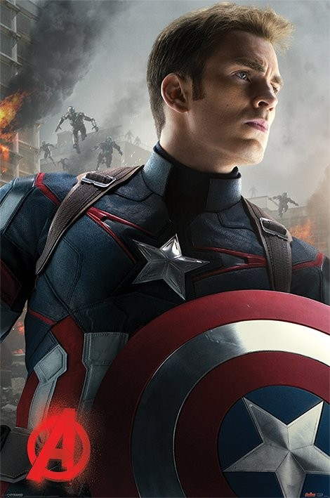
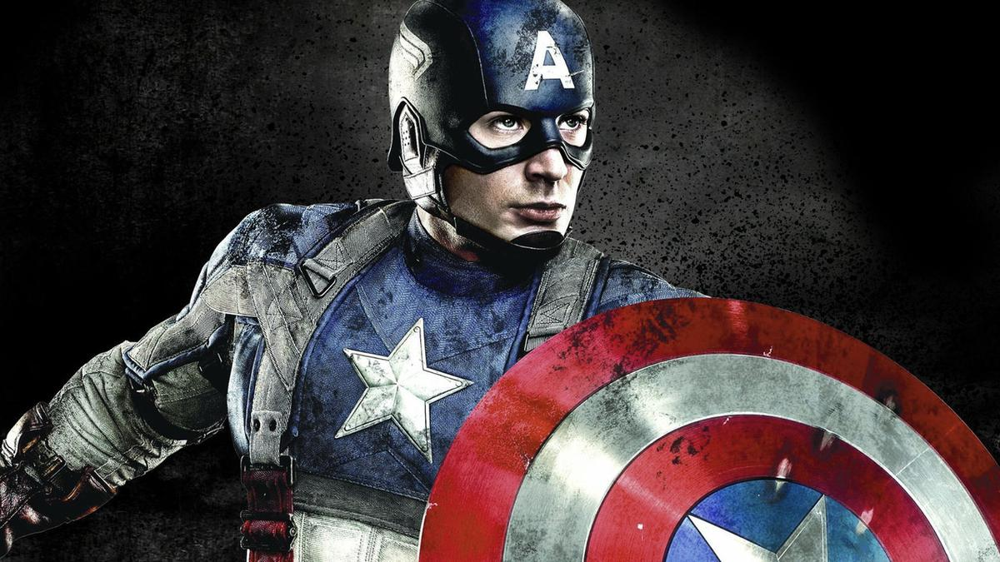

CAPTAIN AMERICA

Steve Rogers
New York, 14 Juli 1940
Debut Date : 19 Juli 2011
ABOUT
Steve Rogers, a rejected military soldier, transforms into Captain America after taking a dose of a "Super-Soldier serum". But being Captain America comes at a price as he attempts to take down a warmonger and a terrorist organization. Captain America possesses no superpowers, but though the Super-Soldier Serum has enhanced his body's strength, speed, agility, endurance, reflexes, reaction time, and natural self-healing ability to the peak of human physical perfection.
More about his superpowers; Peak-Human Condition, Accelerated Healing Factor, Enhanced Intelligence, Longevity. He also had skills and abilities which are; Master Tactician and Strategist, Master Martial Artist, Master Shield Fighter, Advanced Military Operator, Master Acrobat, Indomitable Will, Professional Sketch Artist, Expert Marksman, Expert Swordsman, Weapons Proficiency, Multilingual, Expert Vehicular Driver.
